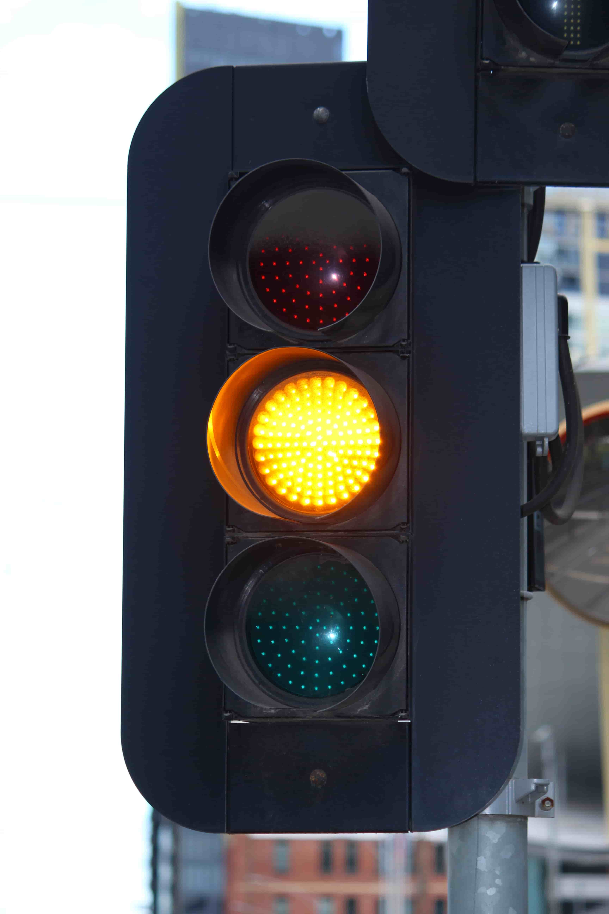
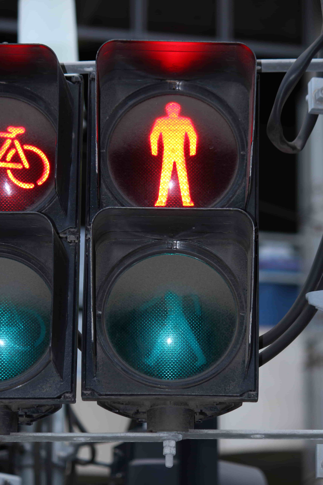
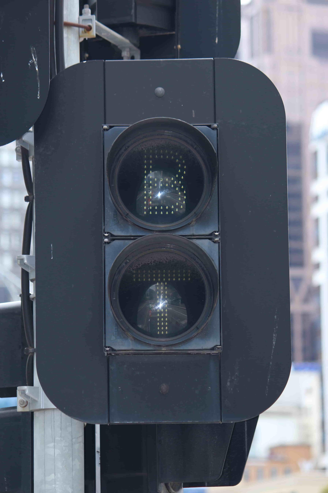
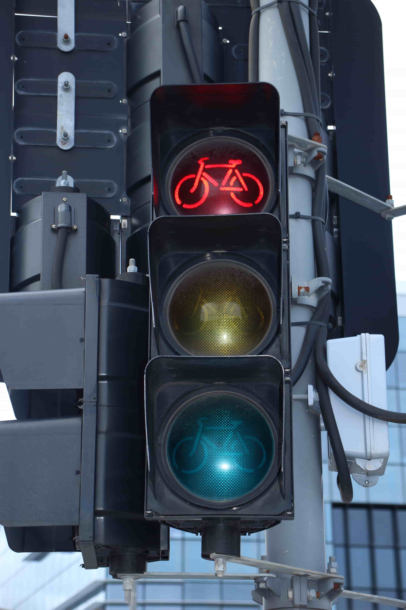
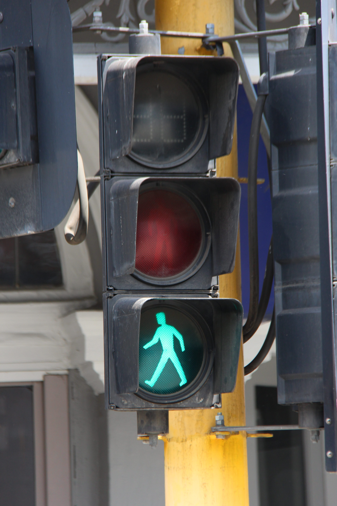
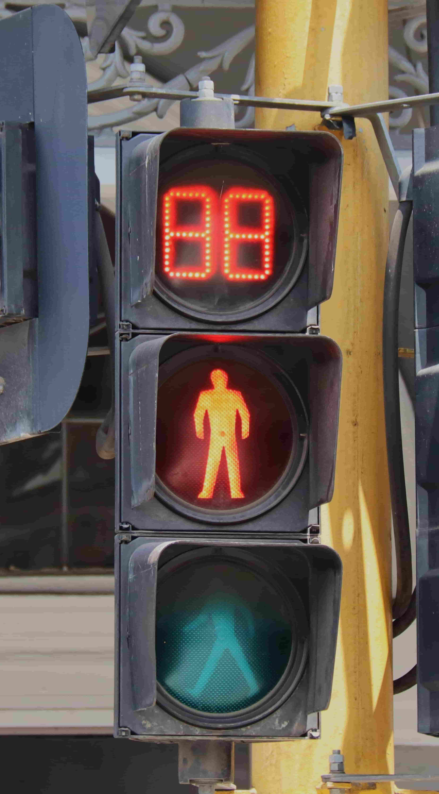
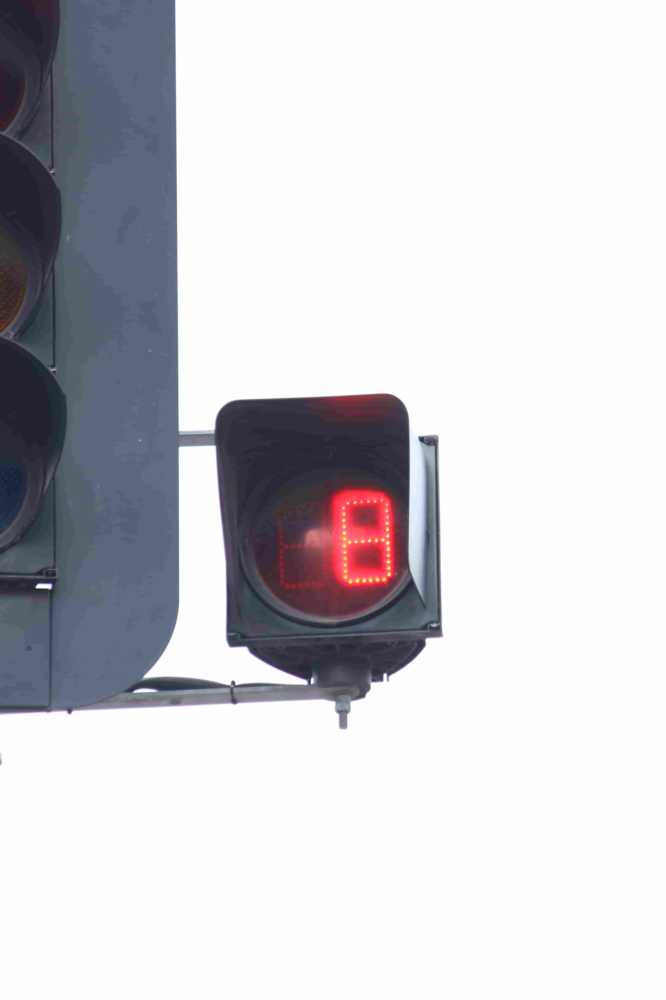
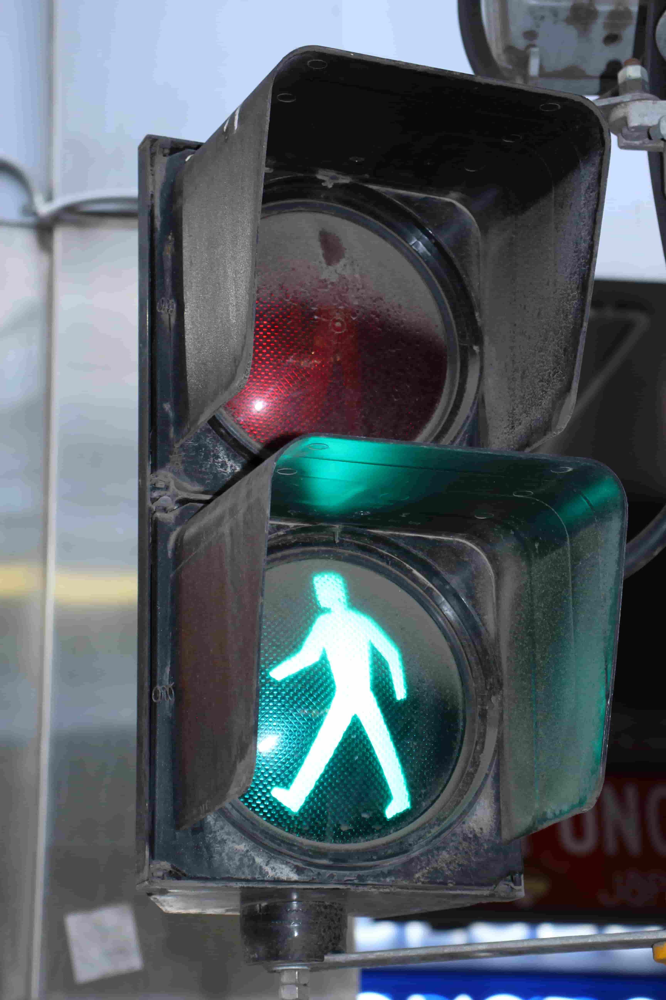
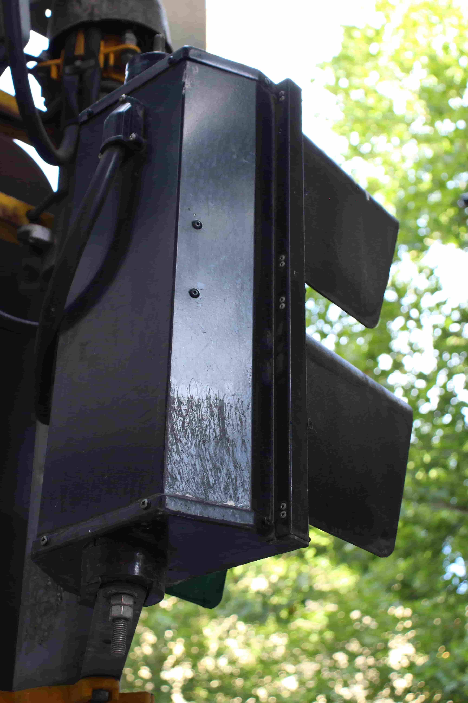

Back to LED signals
Aldridge Traffic Group LED signals
Manufactured: Early 2010's - Present
A common version of Aldridge LED light, made in 8" & 12" variations, although 12" lights are not used in Victoria. These have Aldridge Traffic Group branding on the front, however the Aldridge Traffic Systems branding remains on the back.
Early installs of these lights use cutaway/scoop visors exclusively, but installs after the early 2010's use tunnel visors also. These lights have the lowest LED density of all light revisions/types.
| Ball signal |
Tram signal |
Pedestrian signal |
Bus/Tram signal |
Bike signal |
 |
 |
 |
 |
 |
| Batman Park (Flinders St.) tram stop on Clarendon St, Melbourne, VIC. |
Casino/Southbank tram stop on Queensbridge St, Southbank, VIC. |
George St/Rudduck St, Dandenong. |
| Pedestrian signal with timer - First generation (?) |
Timer signal - First Gen. |
 |
 |
Located at Bridge Rd/Church St, Richmond, VIC.
I believe this intersection has the only set of Aldridge pedestrian signals with a red LED timer; later models have a white timer (Which I'll refer to as the Second Generation.)
Unfortunately, the timers here don't actually work, instead when the red flashing man sequence starts, the timer turns on all LEDs for a split second before turning off.
|
 |
Flinders St Station Tram Stop on St. Kilda Rd.
This timer actually works! |
Metal housing version:
Aldridge do make metal housing traffic signals, which are not modular, rather a single piece.
Metal housing lights are more common in states such as NSW.
| Front view |
Back view |
 |
 |
Flinders Ln/Swanston St, Melbourne.
Installed around 2020 - Maybe as a trial? |
Alternate revision:
Manufactured: Early-mid 2010's (? - May still be made)
An unique version of an ATS signal - The back housing is very similar to an Aldridge Electrical Industries light (with vertical ridges,) however it has Aldridge Traffic Systems branding with the Aldridge Traffic Group 'rocket' logo - in essence, an amalgamation of 3 branding revisions. It is also made from aluminium.
The front has regular Aldridge Traffic Group branding.
The only locations that this type of signal has been found at in Victoria is at the Anakie Rd railway crossing, in Bell Park, Geelong; and the Beckett St pedestrian railway crossing, in Jacana.
These are also the only railway crossings in Victoria to have pedestrian signals in the first place.
I believe that this type of Aldridge Traffic Group LED light is more commonly used in NSW.


{kind=link}
{kind=link}
{kind=link}
{kind=link}
{kind=link}
{kind=link}
{kind=link}
{kind=link}
{kind=link}
{kind=link}
{kind=link}